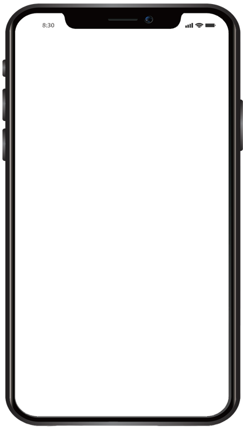

<!DOCTYPE html>
<html lang="en">
	<head>
		<meta charset="UTF-8" />
		<meta http-equiv="X-UA-Compatible" content="IE=edge" />
		<meta name="viewport" content="width=device-width, initial-scale=1.0" />
		<title>Document</title>
		<script src="https://cdnjs.cloudflare.com/ajax/libs/modernizr/2.8.3/modernizr.min.js"></script>
		<style>
			body {
				background: #d0d9e0;
				height: 100vh;
			}
			.mobile_box {
				position: absolute;
				width: 470px;
				height: 820px;
				left: 50%;
				top: 50%;
				transform: translate(-50%, -50%);
				background: url('./img/mobile.png') no-repeat center center/cover;
			}

			.content {
				width: 414px;
				height: 736px;
				position: absolute;
				left: 28.8px;
				top: 63px;
			}
			iframe {
				width: 100%;
				height: 100%;
				border-radius: 0 0 40px 37px;
			}
		</style>
	</head>
	<body>
		<div class="mobile_box">
			<!--  -->
			<div class="content">
				<iframe
					src="./mobile/index.html"
					frameborder="0"
					class="mobile_frame"
					scrolling="auto"
				></iframe>
			</div>
		</div>

		<script>
			const ratio = window.devicePixelRatio;
			const mobile = document.querySelector('.mobile');
			const pc = document.querySelector('.pc');
			if (ratio > 1 && Modernizr.touchevents) {
				//pc.style.display = 'none';
				location.href = './mobile/index.html';
			} else {
				//	mobile.style.display = 'none';
			}

			var uAgent = navigator.userAgent.toLowerCase();
			// 아래는 모바일 장치들의 모바일 페이지 접속을위한 스크립트
			var mobilePhones = new Array(
				'iphone',
				'ipod',
				'ipad',
				'android',
				'blackberry',
				'windows ce',
				'nokia',
				'webos',
				'opera mini',
				'sonyericsson',
				'opera mobi',
				'iemobile'
			);
			for (var i = 0; i < mobilePhones.length; i++) {
				if (uAgent.indexOf(mobilePhones[i]) != -1) {
					location.href = './mobile/index.html';
				}
			}
		</script>
	</body>
</html>
